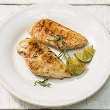

Pollo con Limon
Ingredientes
Pollo (cantidad opcional)
Sal
Romero
Limon
Aceite de Oliva
Materiales necesarios
2 sarténes antiadherentes (una con tapa)
1 Tabla de cortar
Instrucciones
Configuración
Pone aceite en una sarten, ponela a alto calor. A la otra sarten ponele la tapa y dejala a calor bajo.
Cocinando
Corta el pollo y cortalo al tamano apropiado. Pone el pollo en la sarten de calor alto hasta que se cocine el exterior.
Una vez que veas marcas naranjas en el pollo, pasalo a la sarten de calor bajo, ponele sal y romero a gusto, y cerra la tapa
Deja el pollo ahi por 1-2 minutos hasta que el pollo se cocine del todo. Servi el pollo en un plato y ponele limon
Remplaza el aceite cade dos pedazos de pollo
Comer
Se puede servir solo, con papas fritas, con arroz, o pure.